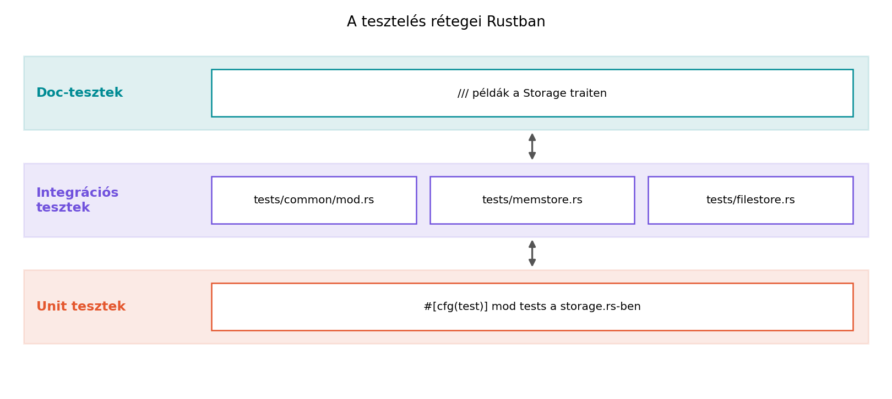

A C++-os világban a tesztelés szinte mindig külső keretrendszer
kérdése: GoogleTest, Catch2 vagy Boost.Test. A buildrendszerben külön
célt kell létrehozni, a tesztfájlokat kézzel kell regisztrálni, a
tesztelendő privát fehér dobozt gyakran
#define private public trükkel vagy friend osztályokkal
nyitjuk meg. A Rust ezt a kérdést a nyelvbe és a Cargo-ba építette: a
#[test] attribútummal jelölt függvényeket a
cargo test automatikusan futtatja, az egységtesztek a
forráskód mellett, az integrációs tesztek a tests/
könyvtárban, a dokumentációs példák pedig magukban a doc-kommentekben
élnek.
A cél most az, hogy az rkv-core Storage absztrakcióját
egység-, integrációs és dokumentációs tesztekkel fedjük le, és közben
kialakítsunk egy generikus tesztkészletet, amelyet mind a
MemStore, mind a FileStore implementációra
futtathatunk.
Definíció. A unit teszt egyetlen modul,
függvény vagy típus viselkedését ellenőrzi, és a forráskódban, általában
egy #[cfg(test)] mod tests blokkban helyezkedik el. Az
integrációs teszt a crate nyilvános API-ját a
tests/ könyvtárból, tehát külső fogyasztóként ellenőrzi. A
doc-teszt pedig a /// dokumentációs kommentben
lévő, háromszoros backtickkel nyitott, rust vagy címke
nélküli kódblokk, amelyet a rustdoc lefordít és futtat.
Szabály. A #[test] függvényeket a
cargo test párhuzamosan, minden CPU-magon futtatja. A teszt
akkor sikeres, ha a függvény visszatér, és akkor bukik, ha pánikol. Az
assert!, assert_eq!, assert_ne!
makrók a pánik mechanizmusára épülnek: hamis feltétel esetén
panic!-t váltanak ki. A
#[should_panic(expected = "részlet")] attribútum azt
ellenőrzi, hogy a függvény pánikol-e, és a pániküzenet tartalmazza-e a
megadott részt.
Szabály. A #[cfg(test)] modulban a
tesztkód hozzáfér a szülőmodul privát elemeihez is, mert a modul a
crate-en belül marad. Az integrációs tesztek ezzel szemben kizárólag a
nyilvános API-t látják, mert a tests/ könyvtár külön
crate-ként fordul.
Szabály. A tesztfüggvény visszatérési típusa lehet
() vagy Result<(), E>, ahol az
E típusra a tesztkeret csak a Debug
implementációt kéri (a Termination trait
Result<T, E>-re T: Termination, E: Debug
mellett él); az E nem kell, hogy a
std::error::Error traitet is implementálja, így a
Result<(), String> is működő teszt. Ekkor a teszt a
? operátorral futtathat hibás műveleteket: ha
Err keletkezik, a teszt elbukik, ha Ok, akkor
sikeres.
C++ oldalon a GoogleTest keretrendszerrel:
#include <gtest/gtest.h>
#include "mem_store.h"
TEST(StorageTest, SetGet) {
MemStore store;
store.set("k", std::vector<uint8_t>{'v'});
EXPECT_EQ(store.get("k"), std::vector<uint8_t>{'v'});
}Rustban ugyanez az rkv-core Storage
traitjén keresztül. Fontos részlet: a MemStore (a
Store aliasa) inherens set metódusa nem ad
Result-ot, ezért a trait metódusát teljesen
minősítve hívjuk (Storage::set(&mut store, ..)), vagy
generikus kódból, ahol csak a trait látszik:
#[test]
fn memstore_set_get_roundtrip() {
let mut store = MemStore::new();
Storage::set(&mut store, "k".into(), b"v".to_vec()).unwrap();
assert_eq!(Storage::get(&store, "k").unwrap(), Some(b"v".to_vec()));
}A különbség nem szintaktikai csupán. A Rust teszt a source fájlban
él, a cargo test minden regisztráció nélkül megtalálja, és
a #[test] attribútum a függvényt a teszt-binárisba
irányítja. A GoogleTest makrók egy külső könyvtárat és egy külön build
targetet igényelnek. Ráadásul a Rust teszt a Result-ot
visszaadva képes a ? operátorral kezelni a hibákat, ami
C++-ban külön ASSERT_NO_THROW vagy
std::expected minta kérdése.
Munkakönyvtár: ~/rust-labor/rkv/
A labor az rkv-core Storage trait megvalósításait
teszteli három szinten. A kiinduló állapot a Vec,
HashMap, BTreeMap és társaik; az Entry API ellenőrzési pontja: a
Storage trait (Trait-ek és generikusok:
sablonok és concepts helyett) kanonikus szerződése
(get, set(String, Vec<u8>),
delete -> bool,
list(Option<&str>)), a MemStore
alias és a FileStore::open(snapshot, log) (I/O és szerializáció: fájlok, pufferelés, serde). A
teszteléshez ezt a meglévő API-t használjuk, és egy új generikus
tesztkészletet hozunk létre, amely mindkét implementációra futtatható. A
FileStore tesztjei dev-függőségként a tempfile
crate-et használják:
Kódblokk — fájl: rkv-core/Cargo.toml · művelet:
új szakasz a fájl végére · ellenőrzés:
cargo build -p rkv-core --tests
[dev-dependencies]
tempfile = "3"storage.rs-benElőször adjunk egy privát normalizáló függvényt a
storage.rs-hez, és teszteljük azt a
#[cfg(test)] mod tests blokkban. A privát függvény a
kulcsot trimeli és kisbetűssé alakítja:
Kódblokk — fájl: rkv-core/src/storage.rs ·
művelet: beillesztés a Response típus elé; a
#[allow(dead_code)] csak azért kell, mert a függvényt
kizárólag a teszt hívja · ellenőrzés:
cargo build -p rkv-core
#[allow(dead_code)]
fn normalize_key(key: &str) -> String {
key.trim().to_lowercase()
}A storage.rs meglévő mod tests
blokkjába:
Kódblokk — fájl: rkv-core/src/storage.rs ·
művelet: beillesztés a meglévő mod tests blokkba ·
ellenőrzés: cargo test -p rkv-core storage → a 3 korábbi és
a 3 új teszt sikeres
#[test]
fn normalize_trims_and_lowercases() {
assert_eq!(normalize_key(" Hello "), "hello");
}
#[test]
fn memstore_lists_keys_sorted() {
let mut store = MemStore::new();
Storage::set(&mut store, "b".into(), b"2".to_vec()).unwrap();
Storage::set(&mut store, "a".into(), b"1".to_vec()).unwrap();
let pairs = Storage::list(&store, None).unwrap();
assert_eq!(pairs.len(), 2);
assert_eq!(pairs[0].0, "a");
assert_eq!(pairs[0].1, b"1".to_vec());
}
#[test]
#[should_panic(expected = "index out of bounds")]
fn index_out_of_bounds_panics() {
let v = [1];
let i = v.len() + 1; // futásidejű index: nem fordítási idejű hiba
let _ = v[i];
}A normalize_key privát, de a tests modul a
use super::*; miatt látja. (Megjegyzés: a függvényt
egyetlen teszt használja, a termék nem, ezért kell az
#[allow(dead_code)]; a tároló korábbi kulcsai kis- és
nagybetűt megkülönböztetők, ezért a normalize_key itt
önálló szemléltető példa, nem az integrált kulcsszemantika része.) A
#[should_panic] példa mesterséges, de jól mutatja a
szintaxist: ha a pánik üzenete nem tartalmazná az expected
részt, a teszt elbukna.
tests/ könyvtárbanHozzuk létre a tests/common/mod.rs fájlt. Ez a modul a
generikus tesztkészletet tartalmazza, amely a Storage
traiten keresztül bármely implementációra lefuttatható. Mivel itt csak a
trait látszik, a set és a delete a trait
(hibát jelző) változata:
Kódblokk — fájl: rkv-core/tests/common/mod.rs ·
művelet: új fájl · ellenőrzés: a következő két fájl után
cargo test -p rkv-core --tests
use rkv_core::Storage;
pub fn assert_storage_contract<S: Storage>(mut store: S) {
assert_eq!(store.get("missing").unwrap(), None);
store.set("k".into(), b"v".to_vec()).unwrap();
assert_eq!(store.get("k").unwrap(), Some(b"v".to_vec()));
store.set("k".into(), b"v2".to_vec()).unwrap();
assert_eq!(store.get("k").unwrap(), Some(b"v2".to_vec()));
assert_eq!(store.list(None).unwrap().len(), 1);
assert!(store.delete("k").unwrap()); // létezett
assert!(!store.delete("k").unwrap()); // már nem létezik
assert_eq!(store.get("k").unwrap(), None);
}A tests/memstore.rs fájlban csak ennyi kell:
Kódblokk — fájl: rkv-core/tests/memstore.rs ·
művelet: új fájl · ellenőrzés:
cargo test -p rkv-core --test memstore
mod common;
use rkv_core::MemStore;
#[test]
fn memstore_satisfies_storage_contract() {
common::assert_storage_contract(MemStore::new());
}A tests/filestore.rs Result-ot visszaadó
teszt, és a tempfile::tempdir() által létrehozott, a
hívásonként egyedi könyvtárat használja (a TempDir a
Drop-ra törli a tartalmát):
Kódblokk — fájl: rkv-core/tests/filestore.rs ·
művelet: új fájl · ellenőrzés:
cargo test -p rkv-core --test filestore
mod common;
use rkv_core::{Error, FileStore};
#[test]
fn filestore_satisfies_storage_contract() -> Result<(), Error> {
let dir = tempfile::tempdir()?; // egyedi könyvtár, a Drop törli
let store = FileStore::open(dir.path().join("state.json"), dir.path().join("append.log"))?;
common::assert_storage_contract(store);
Ok(())
}A FileStore::open az I/O és
szerializáció: fájlok, pufferelés, serde alfejezetben rögzített
módon Result<Self>-t ad, a ? tehát
automatikusan konvertálja az io::Error-t a
thiserror #[from] implementációján keresztül.
Ha a könyvtár létrehozása vagy a megnyitás sikertelen, a teszt
elbukik.
A futtatáshoz a workspace gyökeréből:
cargo test -p rkv-coreVárt kimenet: a cargo test
tesztcélonként (unit tesztek, minden
tests/ fájl külön bináris, doc-tesztek) külön
running N tests blokkot ír, saját darabszámmal; a számok a
crate összes tesztjétől függenek. Az itt létrehozott két integrációs
bináris blokkja:
Running tests/filestore.rs (target/debug/deps/filestore-...)
running 1 test
test filestore_satisfies_storage_contract ... ok
test result: ok. 1 passed; 0 failed; 0 ignored; 0 measured; 0 filtered out
Running tests/memstore.rs (target/debug/deps/memstore-...)
running 1 test
test memstore_satisfies_storage_contract ... ok
test result: ok. 1 passed; 0 failed; 0 ignored; 0 measured; 0 filtered outEgyetlen tesztcél külön futtatásához:
cargo test -p rkv-core --test memstore, a doc-tesztekhez
cargo test -p rkv-core --doc, a storage.rs
unit teszteihez cargo test -p rkv-core --lib storage.
A Storage trait dokumentációjában tegyünk egy futtatható
példát a storage.rs fájlban. A doc-teszt külön crate-ként
fordul, ezért a publikus útvonalakat (rkv_core::...)
használja, és a trait metódusait teljesen minősítve hívja:
Kódblokk — fájl: rkv-core/src/storage.rs ·
művelet: a pub trait Storage feletti doc-komment cseréje ·
ellenőrzés: cargo test --doc -p rkv-core → 1 sikeres
doctest
/// Kulcs–érték tároló absztrakció.
///
/// # Példa
///
/// ```
/// use rkv_core::{MemStore, Storage};
///
/// let mut store = MemStore::new();
/// Storage::set(&mut store, "k".into(), b"v".to_vec()).unwrap();
/// assert_eq!(Storage::get(&store, "k").unwrap(), Some(b"v".to_vec()));
/// ```
pub trait Storage { /* a négy metódus változatlan (r024) */ }A cargo test --doc -p rkv-core parancs a
rustdoc segítségével lefordítja és futtatja ezt a
kódblokkot. A doc-tesztben az unwrap elfogadható, mert a
cél a példa tömörsége, nem a hibakezelés.
A tesztelési rétegeket a következő ábra foglalja össze:

A három szint elkülönül, de közös bennük, hogy a
cargo test egyetlen paranccsal futtatja mindet, és a
Storage trait az a szerződés, amelyet az integrációs
generikus tesztkészlet egységesen ellenőriz.
Továbbvitt eredmény. A
tests/common/mod.rs fájlban lévő
assert_storage_contract<S: Storage> generikus
tesztkészlet a későbbi alfejezetek alapja lesz: a Záróprojekt: az rkv teljes rendszerként elfogadási
szkriptje futtatja a generikus tesztkészletet
(memstore_satisfies_storage_contract,
filestore_satisfies_storage_contract); a Property-alapú tesztelés és benchmark saját
property-teszteket fogalmaz meg a Storage-szerződés
viselkedésére.
Párhuzamos tesztek, közös állapot. A
cargo test alapértelmezésben párhuzamosít. Ha a tesztek
ugyanarra a fájlra írnak, vagy környezeti változóra támaszkodnak,
versenyszerű hibákat kaphatunk. Az integrációs FileStore
tesztben ezért tempfile::tempdir()-rel minden hívás saját,
egyedi könyvtárat kap (a folyamatazonosító önmagában nem elég:
ugyanabban a folyamatban futó tesztek, vagy egy korábbi, megszakadt
futás maradéka ugyanazt a nevet kapná). Ha több tesztnek kell közös
erőforrás, használjunk Mutex-et, vagy inkább egyedi
erőforrást tesztesetenként.
#[should_panic] expected nélkül. Ha
nem adunk meg expected paramétert, a teszt bármilyen pánik
esetén sikeres lesz, akár a tesztelt kód egy tőle független helyen is
pánikolt. Mindig adjuk meg a pániküzenet egy egyedi részletét.
Az integrációs teszt nem látja a privát elemeket. Ha egy típust vagy függvényt csak integrációs teszttel akarunk ellenőrizni, akkor annak nyilvánosnak kell lennie. Ez nem hiba, hanem tervezési jel: ha a belső logikát nem tudjuk a publikus API-n át tesztelni, akkor vagy unit teszt kell a modulban, vagy az API nem elég teljes.
Klónozás a borrow checker „legyőzésére”. A
tesztekben gyakori kísértés, hogy a kölcsönzési hibák elkerülésére
mindent .clone()-ozzunk. A generikus tesztkészletben a
Storage trait bound elegendő, nincs szükség klónozásra; a
mut store paraméter és a
&self/&mut self metódusok a borrow
checkerrel biztonságosak.
storage.rs fájljában a normalize_key
privát (fn normalize_key, nincs
pub), a storage modul pedig nyilvános
(pub mod storage;). Az alábbi teszt a tests/
könyvtárban van, és ezt a függvényt próbálja hívni. Lefordul-e? Indokold
válaszod.#[test]
fn test_normalize() {
assert_eq!(rkv_core::storage::normalize_key("A"), "a");
}#[test] függvénnyé,
és használd a ? operátort a hibakezelésre. (A Rust
Storage::delete Result<bool>-t ad: a
bool azt jelzi, létezett-e a kulcs.)TEST(StorageTest, DeleteMissingKey) {
MemStore store;
EXPECT_NO_THROW(store.delete("missing"));
EXPECT_EQ(store.get("missing"), std::nullopt);
}Implementációs feladat az rkv-ban. Bővítsd a
tests/common/mod.rs fájlban lévő
assert_storage_contract függvényt egy prefix-ellenőrzéssel:
állítsd be a one és two kulcsokat, majd
ellenőrizd, hogy a list(None) mindkettőt visszaadja, a
list(Some("t")) csak a two-t, a
list(Some("x")) pedig semmit.
Hibajavítás, refaktorálás. Egy korábbi változat
az ideiglenes fájl nevét a folyamatazonosítóból képezte
(rkv-test-<pid>). Ha ugyanabban a folyamatban két
teszt is létrehoz ilyet, ütköznek, és egy korábbi, megszakadt futás
maradéka is ott maradhat. Írj egy TempDir segédtípust,
amely tényleg egyedi könyvtárat készít (nem keveri más teszt vagy
korábbi futás állapotával), és Drop-ban törli. Írd le,
mikor nem törlődik: a Drop best effort,
panic = "abort" profilnál,
std::process::abort()-nál vagy a folyamat kilövésekor nem
fut le.
Nem fordul le. A normalize_key
privát (nincs pub), és a tests/ könyvtár külön
crate-ként csak a pub elemeket látja. A fordító
E0603 hibát ad („function normalize_key is
private”; a függvény privát, a modul nyilvános). Privát elem a modul
#[cfg(test)] mod tests blokkjában tesztelhető; ha a
nyilvános API-n át nem érhető el, az vagy unit tesztet kíván, vagy azt
jelzi, hogy az API nem elég teljes. (A pub(crate) sem
segít: az is csak a crate-en belül látható, az integrációs teszt viszont
külső crate.)
Rust megoldás:
use rkv_core::Storage;
#[test]
fn delete_missing_key() -> Result<(), rkv_core::Error> {
let mut store = rkv_core::MemStore::new();
assert!(!Storage::delete(&mut store, "missing")?); // nem létezett: false, nem hiba
assert_eq!(Storage::get(&store, "missing")?, None);
Ok(())
}A delete és a get is Result-ot
ad, a ? továbbítja a hibát, a teszt pedig
Result-tal jelzi a keretrendszernek. A trait metódusait
teljesen minősítve hívjuk, mert a MemStore inherens, nem
Result-ot adó delete-je egyébként elnyomná
őket.
pub fn assert_storage_contract<S: Storage>(mut store: S) {
assert_eq!(store.get("missing").unwrap(), None);
store.set("k".into(), b"v".to_vec()).unwrap();
assert_eq!(store.get("k").unwrap(), Some(b"v".to_vec()));
store.set("k".into(), b"v2".to_vec()).unwrap();
assert_eq!(store.get("k").unwrap(), Some(b"v2".to_vec()));
assert_eq!(store.list(None).unwrap().len(), 1);
assert!(store.delete("k").unwrap());
assert!(!store.delete("k").unwrap());
assert_eq!(store.get("k").unwrap(), None);
store.set("one".into(), b"1".to_vec()).unwrap();
store.set("two".into(), b"2".to_vec()).unwrap();
assert_eq!(store.list(None).unwrap().len(), 2);
let prefixed = store.list(Some("t")).unwrap();
assert_eq!(prefixed.len(), 1);
assert_eq!(prefixed[0].0, "two");
assert!(store.list(Some("x")).unwrap().is_empty());
}Drop-os törléssel. A kulcs a
create_dir: ez atomikusan hibát ad, ha a könyvtár
már létezik, ezért sosem kerülünk idegen előállapotú könyvtárba;
ütközéskor a számláló következő értékét próbáljuk.Kódblokk — fájl:
rkv-core/tests/filestore_own_tempdir.rs · művelet: új fájl
· ellenőrzés:
cargo test -p rkv-core --test filestore_own_tempdir → 2
sikeres teszt
mod common;
use rkv_core::{Error, FileStore};
use std::path::{Path, PathBuf};
use std::sync::atomic::{AtomicUsize, Ordering};
static NEXT: AtomicUsize = AtomicUsize::new(0);
struct TempDir {
path: PathBuf,
}
impl TempDir {
fn new(prefix: &str) -> Self {
loop {
let n = NEXT.fetch_add(1, Ordering::Relaxed);
let path = std::env::temp_dir()
.join(format!("{prefix}-{}-{n}", std::process::id()));
match std::fs::create_dir(&path) {
Ok(()) => return Self { path },
// Már létezik (korábbi futás maradéka): a következő szám.
Err(e) if e.kind() == std::io::ErrorKind::AlreadyExists => continue,
Err(e) => panic!("nem hozható létre ideiglenes könyvtár: {e}"),
}
}
}
fn path(&self) -> &Path {
&self.path
}
}
impl Drop for TempDir {
fn drop(&mut self) {
let _ = std::fs::remove_dir_all(&self.path); // best effort
}
}
#[test]
fn filestore_contract_with_own_tempdir() -> Result<(), Error> {
let dir = TempDir::new("rkv-test");
let store = FileStore::open(dir.path().join("state.json"), dir.path().join("append.log"))?;
common::assert_storage_contract(store);
Ok(())
}
#[test]
fn two_temp_dirs_in_one_process_are_distinct() {
let (a, b) = (TempDir::new("rkv-test"), TempDir::new("rkv-test"));
assert_ne!(a.path(), b.path());
}A TempDir::drop a teszt végén, pánik esetén (a verem
visszacsévélésekor) is lefut, tehát a könyvtár ilyenkor is törlődik. Ez
best effort: a remove_dir_all hibáját elnyeljük,
és a Drop egyáltalán nem fut panic = "abort"
profilnál, std::process::abort()-nál, a folyamat
kilövésekor (SIGKILL) vagy áramkimaradáskor. Ezért az
egyediség a create_dir atomikus hibáján múlik, nem a
törlésen. A gyakorlatban a tempfile::TempDir ugyanezt a
mintát (véletlen név, atomikus létrehozás, Drop-os törlés)
adja, ezért a labor integrációs tesztje azt használja.
A Rust tesztelési eszközei beépítettek: a #[test]
attribútum a forráskódban, a tests/ könyvtár az integrációs
tesztek, a /// dokumentációs példák pedig a doc-tesztek
színhelye. A cargo test egy paranccsal futtatja mindhárom
szintet, párhuzamosan. A unit tesztek a
#[cfg(test)] mod tests blokkon keresztül érik el a privát
elemeket, az integrációs tesztek viszont kizárólag a publikus API-t
látják. A tesztek assert!, assert_eq! makrókat
használnak, pánik esetén buknak,
#[should_panic(expected = "...")] attribútummal a pánikot
ellenőrizhetjük, Result visszatéréssel pedig a
? operátort használhatjuk. A laborban létrehoztuk a
tests/common/mod.rs generikus tesztkészletet
assert_storage_contract<S: Storage> néven; ezt a
MemStore és FileStore integrációs tesztek
egyaránt használják, a FileStore teszt pedig a
tempfile által adott, hívásonként egyedi könyvtárat.
Továbbvitt eredmény: a tests/common/mod.rs
generikus tesztkészletet a Záróprojekt: az rkv
teljes rendszerként elfogadási szkriptje futtatja; a Property-alapú tesztelés és benchmark saját
property-teszteket ad a Storage-szerződés viselkedésére. A
Storage trait doc-tesztje a cargo test --doc
paranccsal futtatható.
tests/
könyvtár, integrációs tesztek):
https://doc.rust-lang.org/cargo/reference/cargo-targets.html#teststempfile (3.x): https://docs.rs/tempfile/3A kódot és a kimeneteket a könyv rögzített toolchainjével (Rust
1.99.1) ellenőriztük. A libtest kimenetének pontos
formátuma és a párhuzamos futtatás részletei toolchain-verziótól
függenek.